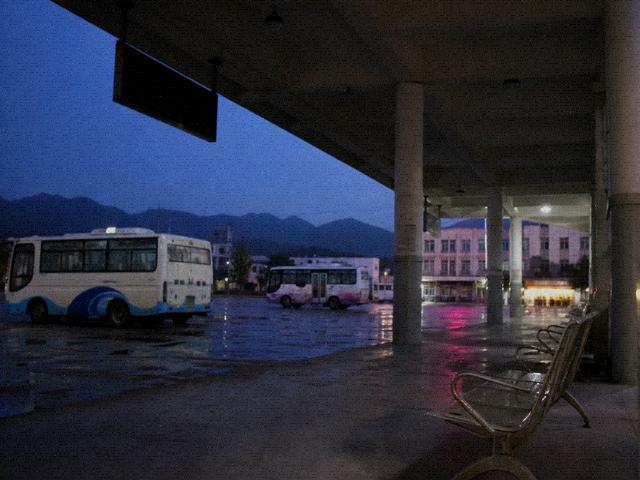

hot water till 10 is real. after 10 you burn it yourself, coal stove, smoke comes back in. dont stay in the rooms where you cant read the plate, not haunted, rats.
complaint book really goes to the troupe. dont write your phone. thats how i got in.
this lodge complaint was MaJu 2009-07-04. next day he added a bit. the add doesnt show in the mirror. he later copied the original into a blog draft. draft never posted. mod fished half of it out of recycle. half is below.
hot water till 10 is real. after 10 you burn it yourself, coal stove, smoke comes back in. comes in the east wing first. east wing window gaps are big. dont stay in the rooms where you cant read the plate, not haunted, rats. rats chew cartons at night. cartons are instant noodles the front desk stacked. complaint book really goes to the troupe. dont write your phone. thats how i got in. the number i wrote was the same one i bought the ticket with. same one goes on the travel list. list goes to the troupe. once its at the troupe CS cant delete it. somebody replied the west-wing rooms are damp. damp is real. west wing sits by the well. well rim sweats in summer. bed legs need bricks. Old Han wont give you bricks. bricks are at the wall-foot, you move them. i didnt get fleas. the pair who came in july did. they didnt come back. what they left was red dots on the sheet. Old Han said chili sauce. it wasnt chili sauce. front desk can write a receipt. handwritten. tax number sometimes blank. blank, dont take it to the office for reimbursement. they bounce it. bounced, dont come find MaJu. MaJu changed numbers. changed and this thread is still up. still up cos mod is too lazy to delete. instant-noodle cartons stacked behind the desk. rats hit the braised-beef box. date on the box is 2008. already not edible. not edible and they still stack it. stacked it blocks the room plates. half why you cant read the plates is this. not haunting. tax number blank, Old Han says the chop is in the drawer. key goes out with him. he aint at the desk you wait. you wait and its still handwritten.